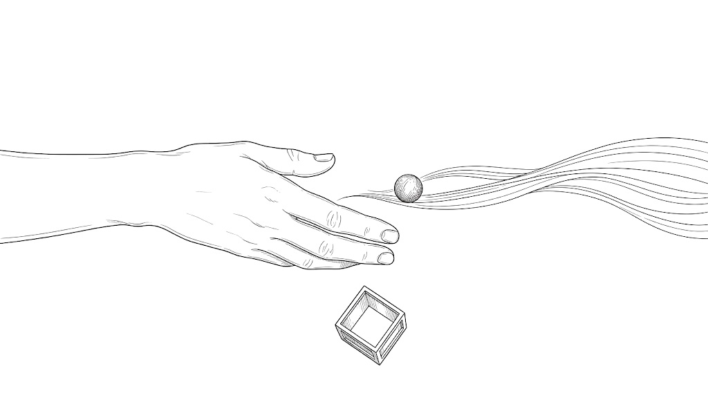

Rick Rubin 做了四十年唱片，從 Def Jam 到 Johnny Cash、Jay-Z、Adele、System of a Down。這場訪談他幾乎沒談技術，聊的是更前面的事，像是你怎麼知道自己要做什麼、怎麼不被別人的標準綁住，還有為什麼最好的決定常常是說不出理由的那一個。整場聽下來，他給的多半是態度，很少有步驟。▶ 0:00
這是 Steven Bartlett 主持的 The Diary Of A CEO，全長兩小時四十六分。主持人自己是創業者，整場一直拿商業世界的語言去撞 Rubin 的說法，像顧客需求、數據、時間表、目標，看撞不撞得動。Rubin 幾乎每次都用同一招回應，往自己裡面看。上面那一盒是留給回頭看的，照主題排，每條附一句原話，還有它出現在第幾段。下面照影片順序走，開場預告和兩段廣告跳過。每段先用一行寫主持人問了什麼，接著是 Rubin 的重點和原話，兩個人沒對上的地方順手帶一兩句，其中八段最後有一題反思。桌機上點段落裡的 ▶ 會跳到那一句，開著跟讀的話，照樣播到這一段結尾就停。建議先看完一段影片，再讀那一段。
01說不出理由的那一步▶ 2:33
主持人問你怎麼定義自己的工作？有沒有一條不做音樂的人也帶得走的原則？
做東西要推到說不出理由的地步。他最近一直在想 indefensible 這個字，意思是無法辯護。這本來是很重的貶義詞，他反過來用。做藝術的時候，你把東西推到極端，推到你說不出為什麼。說不出來，是因為已經超出理性能解釋的範圍。在這之前他還先講了一句，任何問題通常都有一條創意的路可以走，而「大家公認的前進方式」本身常常就是另一個限制。
他自己剛做過一次，被一個迷因拉去寫了一本書。有人把他閉眼戴耳機的照片配上 vibe coding，跟他一點關係都沒有，朋友一直轉給他。換成寫《The Creative Act》之前的他，大概笑一笑就過去了，這次他當成一個邀請，發了一則玩笑推文。平常一則一兩萬人看，這則隔天一百五十萬。接著他放下正職，去寫一本跟 vibe coding 有關的書，到現在也說不出這算不算好主意。
主持人接著說，這種跟自己無關的邀請，我們通常都會拒絕，因為不在名片上。Rubin 回他：
主持人覺得標籤在雞尾酒會上是好用的捷徑，能讓人三秒就認識你，Rubin 只回「也沒有捷徑這種東西」。真的需要讓人快速認識你的場合該怎麼辦，兩個人都沒有接下去。庫裡另一篇 我知道我不是誰 講的是同一件事，只是從反方向走。
「說不出理由」可能是直覺跑在理性前面，也可能只是還沒想清楚。你怎麼分辨這兩種？想一個說不出理由、事後證明是對的決定，再想一個說不出理由、事後證明只是衝動的。在當下，它們感覺起來有什麼不同？
02「更多一樣的東西」賣得更好，那又怎樣▶ 10:29
主持人問重複同一套，數字通常比較好看。那銷量呢？唱片公司呢？冒險放長來看，真的比較成功嗎？
他們做東西從來不看短期誘因。他講得很死，一次都沒有。他們做的是要一直留下去、真正屬於自己的東西，所以有人聽不懂也沒關係，可能是還沒懂，也可能永遠不會懂。
兩個例子，Yeezus 和 Linkin Park。主持人是 Kanye 的大粉絲，第一次聽 Yeezus 覺得「這是什麼」，聽了好一陣子才覺得是天才之作。Rubin 說那張是故意做成反嘻哈的。主持人追問銷量，他只反問一句：「這張專輯現在對你重要嗎？」主持人說重要。「那它就做到它該做的事了。」
Linkin Park 那時候大可以再做一張一樣的 rap rock，他們選了換聲音。一半的歌迷不喜歡，一半很愛，又多了一批新聽眾。而且那個曲風本來就快走到尾聲了。
商業那場遊戲沒有錯，他只是不玩。主持人最後問的是哪一種長期比較成功。這題他其實沒有正面回答，只說四十年來他都冒險，都做自己最喜歡的東西。那是他一個人的經驗，沒有對照組可以比。
你手上正在做的事，是在玩哪一場遊戲？如果兩場都得玩，哪些部分照日記的規則走，哪些照市場的規則走？
03電台說「永遠不會播這個團」：99 Problems 與 System of a Down▶ 16:38
主持人問Jay-Z 怎麼會找上你？那首〈99 Problems〉你貢獻了什麼？
他做的是音樂，外加一句方向。Jay-Z 那時候打算退休，《The Black Album》要當告別作，他找了自己最喜歡的十個製作人各做一首，Rubin 這首就是〈99 Problems〉。詞是 Jay-Z 自己想的，方向從 Chris Rock 那裡來。Ice-T 有一首同名的歌，內容在講女孩，Chris Rock 說「99 problems」拿來當 hook 很好，但不一定要講女孩，Rubin 就建議 Jay-Z 乾脆講那些 problems。
把關的人判斷一首歌，看的是它跟電台上現在的歌像不像。歌做好拿給 Def Jam 的總裁聽，對方說很棒，但永遠不會是單曲，因為它跟電台上所有東西都不一樣。Rubin 說那是老派的想法，做東西是為了上電台，所以要聽起來跟電台上其他歌一樣。
後來真的有衝擊力的，常常一開始就是因為不像才被擋下來。〈99 Problems〉最後還是上了電台，因為跟什麼都不像，衝擊很大。System of a Down 的〈Sugar〉拿給 KROQ，對方說「我們永遠不會播這個團」，一年後這首歌是那個電台點播第一名。兩週前他才在巴黎看他們在體育場連賣兩晚，每晚八萬人。問他怎麼做到的，他說講不出來，也沒有可以照著做的步驟。
04怎麼更清楚自己愛什麼：靜坐，還有線索在裡面不在外面▶ 20:42
主持人問有沒有辦法更清楚知道自己愛什麼？你怎麼知道靜坐有用？看外面的訊號，像 Amazon 從顧客需求往回推，不是比較可靠嗎？
要知道自己愛什麼，他看的是什麼東西會點亮你，會讓你興奮到想放給朋友聽。他的方法就一個，靜坐。他說靜坐讓你看穿表面，看到底下更深的東西。他十四歲學 TM，上大學後停了五年。搬到加州後第一次重新坐下來，他馬上認出來，「這就是我看世界的方式」。
主持人要證據，Rubin 說沒辦法照你想要的方式回答，他唯一的證據就是離開過、又回來了。然後他把問題丟回去，你未婚妻每天做呼吸練習、說影響很大，你為什麼連陪她試一個月都沒有？主持人承認沒有好答案。
所有指標都說不行的時候，還是押自己相信的。主持人拿 Amazon 來比，問的是 Amazon 怎麼看顧客；Rubin 回的是 Amazon 怎麼堅持。他說 Amazon 大概虧了二十年，觀眾說不行、模型也說不行，他們還是加碼。兩個人講的其實是 Amazon 的不同面向。
什麼時候該聽外面（數據、別人的反應），什麼時候該聽裡面？你講得出自己的分界線嗎？還是其實是事後才決定哪一邊算數？
05創造力是天生的嗎，還有為什麼別比較▶ 28:55
主持人問是不是有些人天生比較聽得到內在的聲音？在創作裡談怎麼衡量成功、怎麼為指標最佳化，永遠都不對嗎？比較是人的本能，你要我們乾脆不比了？
他覺得每個人本來都有創造力，是後來一路被磨掉的。上學要你複述、整天坐在椅子上，我們被教著遵守規則，他說規則是在控制我們。小時候有人跟你說「你不會唱歌」，這句話就卡在你身上，從此唱歌變成你不做的事。
他想不出任何一個會想用數據的例子。他看的是做的時候心裡的感覺，還有放給別人聽的時候，對方有沒有被點亮。兩個作品在商業上可能差不多，一個點亮你，另一個只是把事情做完，他說放長來看，點亮你的那個對你比較有價值，你也比較願意一直支持它。不過他講的都是創作現場，主持人自己待的公司和投資那個世界，他沒有碰。
比較就是不要比，因為永遠是拿蘋果比橘子。他相信我們什麼都能做，只是能做到的程度不一定是第一名。他想打棒球，可以越打越好，但不代表進得了大都會隊。問題是我們一發現進不了，就把整件事關掉。Michael Jackson 比較擅長當 Michael Jackson，Prince 比較擅長當 Prince。
06懶惰的工作狂，和只在九成完成後才設的截止日▶ 35:42
主持人問你說自己是「懶惰的工作狂」，那是什麼？唱片公司的截止日到了、東西還沒好，你會收手交出去嗎？我們的人生都在設時限，那該怎麼辦？
懶惰的工作狂的意思是，大部分日子他都不想做排好的事。可是他照樣排、照樣出現、把該做的做完。
還看不出它會變成什麼的時候，他不排時間表。他第一次設截止日，是已經破解了、大概完成九成之後，而且只管最後那一成，那一成通常不會決定成敗。
這來自他書裡的四個階段。前三個沒有時間表，因為你是做著做著才發現，本來要做一座藍色雕像，最後變成一幅紅色的畫。
主持人問的是截止日到了怎麼辦，那是外面給的、你改不了的日期。Rubin 回的是他們不在截止日下工作，這是有籌碼拒絕截止日的人才給得出的答案。大多數人手上的截止日都輪不到自己訂，這一半他沒有談到。
驗收的標準只有一句，「它是好的」的意思是「對我來說是好的」。
主持人說這聽起來根本是人生建議，Rubin 說完全一樣。只要你活成讓這些事發生的樣子，你就是藝術家，不管你是商人、廚師還是母親。
他說在看得見它是什麼之前，不可能有時間表。你現在手上有沒有一件事，還在種子期就被要求交日期？反過來，有沒有一件事其實早就看得見形狀，卻一直用「還沒想清楚」拖著？
07要不要辭職追夢，還有他怎麼「教練」一個人▶ 40:59
主持人問世界可能不喜歡你給的東西，代價是真的。會賠錢、會失去朋友，辭職去祕魯拉小提琴大家會覺得我很怪，所以我就順從了。還有，你是怎麼「說服」藝術家跟隨自己的？
生活的現實要處理，但別把那份壓力放到作品上。他沒叫你不管房租。他剛開始做音樂時，也以為自己會有一份正職，音樂永遠只是嗜好，本來還打算去唸法學院。
他不說服任何人，他只問、只聽。主持人要他當場角色扮演，他開口第一句是「把你做過最喜歡的放給我聽」，然後一直問，你喜歡它哪裡？做的時候好玩嗎？放給朋友聽是什麼感覺？他說很多藝術家會先把自己想做什麼講得很清楚，接著又說「我不知道我想做什麼」，他們聽不見自己。他的工作就是幫他們把自己擋在路上的東西移開。
他把這件事比成嘗披薩。給你兩片，問你哪片比較好吃，你不會說「我覺得那個人會比較喜歡這片」。我們不相信事情可以這麼簡單，他說它就是這麼簡單。
他同時說了兩句話：「失去朋友，冒那個險」，和「找一份正職付帳單，別讓作品扛房租」。這兩句的分界線在哪？哪些東西值得為作品失去，哪些東西應該先保住，好讓作品不必替你賺錢？
08他怎麼知道一個人會很厲害，以及為什麼他沒有目標▶ 48:10
主持人問偉大的藝術家有沒有共同特質，讓你能事先押中？你會替自己設目標嗎？
他押一個人，看的是這個人怎麼看音樂。他問過一個做創投的朋友，挑投資對象看的是生意還是創辦人，朋友說永遠是創辦人，生意是什麼不重要。音樂也差不多，一首好歌像一個好產品，當然有用，但讓他確定的是那個人看音樂的方式。
The Strokes 找過他兩次，他兩次都「沒聽到」，拒絕了。第三次寄來的是他們最爛的 demo，有的只是二十秒的語音備忘錄，這次他卻聽到了它可以變成什麼。問他怎麼知道，他說那是一種 knowingness，你會身體往前傾，會想再聽一次，不會想跳到下一首。
他對不確定很自在，也從來不設目標。八年前 Malibu 那棟放著他所有東西的房子燒掉了，他本來以為會在那裡住一輩子，那時候才確定無常是真的。他說我們不可能知道任何事，只能根據當時手上的資訊做決定。主持人拿車上的導航來比，先設目的地再開，Rubin 說他以前放假就是上車一直開、一直聽音樂，開到哪算哪。講到五年計畫和新年新希望，他說：
主持人最後問，這是每個人都做得到的，還是你現在這麼成功才有的特權？Rubin 沒有正面回答，直接講了下一段的故事。
09被困住了？有東西得先死，但不是你▶ 54:10
主持人問還是上一題，接受不確定是每個人都做得到，還是成功之後才有的特權？Rubin 沒有正面回答，改講一個故事。
你沒有義務一直做那件讓你痛苦的事。有一位很成功、正經歷很難時期的藝術家，Rubin 在 Malibu 的晚餐上感覺到他可能會自殺，就跟他說你不用再做這件事了，你做得夠多了，隨時可以搬到世界另一頭、住在海邊。幾年後對方跟他說，記得嗎，你說我可以退出。他後來真的退了。
想結束生命的人感覺到「有東西必須死」，以為那是自己的身體。Rubin 說該結束的通常是那些選擇、那條職涯、那段關係，結束了，就可以開始一個全新的人生。就像一盤棋，你可以站起來離開這張桌子，去下另一盤。庫裡 一天重置人生 講的也是這個重置鈕，Rubin 是從最黑的那一端講回來的。
他舉的例子剛好是一個負擔得起不做的人，正好碰到主持人問的特權。他補了一句，重來不需要很多錢，可能還更省，可以搬去生活成本很低的地方。但一個沒有積蓄的人第一步怎麼走，他沒有展開。
10身分是陷阱：醫院裡那句「你在最好的位置」▶ 59:42
主持人問很多人的監獄叫身分。我是曼哈頓的律師、我是父親，換來雞尾酒會上別人對我印象深刻，然後就被困住了。想按重置鈕的人，第一步該做什麼？
我們是自由的，困住你的只是一個故事。他去醫院看一位自殺未遂的好朋友。前兩個進去的人都在哭，好像朋友已經死了。輪到他，他說了一句連自己都不知道從哪來的話：
你剛剛按了重置鈕，所有你討厭做的事，你永遠不必再做了。朋友看他的眼神像看瘋子，可是那是朋友出事之後，第一次對任何東西有反應。後來兩個人聊得很好，朋友起身換了衣服，又像他自己了。
承諾值得做，也值得守。但到了某個點它會變成生死問題，那時候按重置鈕是可以的。他的框架處理的是明確壞掉的情況，例如承諾本身是個錯誤、對方變成酒鬼、能做的都做了。主持人補了一個更常見的，沒有哪件事大到要走，只是有一百件小地方對不上。這題是主持人自己回答的，他說也許能修，但別讓它拖著，Rubin 只應了一聲「對」。最常見的那種卡住，反而拿到最短的回答。
錢從來不是他做決定的理由。主持人問他有沒有因為覺得不對，推掉過很多錢。他說一定有，只是想不起來，因為他只想自己做了的事，不想沒做的。他也想參與成功，覺得那樣是對的，但他從來不因為錢做決定。
在一段關係、一份工作或一個身分裡，你怎麼知道自己是在「修」，還是在「拖」？如果答案是「再給它一點時間」，那個時間的終點是什麼？
11三十三歲那支毒箭，和偉大藝術家唯一的共通點▶ 1:07:34
主持人問你三十三歲那次憂鬱是怎麼回事？偉大的藝術家有什麼共通點？我聽到了確信，也聽到了謙虛，這兩個看起來是相反的。
他從來沒練過應付不穩定的那條肌肉。他是獨生子，父母全心全意愛他，音樂一路成功，他被養成相信自己不會錯。三十三歲那年，合約的對口換成一個他不認識的人，對方打來只講一句「我讀了我們的合約，我不喜歡」，他就垮了好幾年，恐慌、失眠、吃抗憂鬱藥、一週見五天治療師。換成別人，大概會說「到時候再處理」就過去了。
他說那像被毒箭射中。如果有按鈕可以把那段抹掉，他說他不會按。以前他覺得自己像超人，現在呢？他只說「累」。
偉大的藝術家，通常都有自己的觀點。用別人沒看到的方式看世界，或是大家都看到了、卻沒人說出來的東西，就像好的喜劇演員。他再加上一樣，願意做任何該做的事的那種工作態度。
主持人點出的「確信和謙虛怎麼同時存在」，Rubin 沒有接，直接講觀點。可以這樣讀，他剛講完的三十三歲就是那一題的答案。毒箭之前他只有確信，之後才多了他說的「更實際的世界觀」。不過這是從他的故事推出來的，他本人沒這樣講。
12怎麼變得更原創：往外看、讀老書、柔能克剛▶ 1:17:06
主持人問有沒有辦法讓自己的觀點更有意思？我是很理性的人，相信共時性這類看不見的東西，會怎麼改變一個人的人生？
讓你特別的，常常是別人沒在讀的東西。他的建議是往自己的領域外面看，去美術館、讀老書、看史上最好的電影。主持人補了 Steve Jobs 的例子，他對設計和字體的愛，是大學裡沒人會叫一個想當程式設計師的人去學的東西。
他桌上那本《道德經》三十年前第一次讀，人生每個階段再讀都像一本新書，這也是《The Way of Code》的來源。書裡的核心是柔能克剛。他舉拿破崙的例子，遇到緊急狀況一律說「兩週後再拿來」，因為百分之九十九會自己解決。
他信的是那種說不出來、但感覺得到的東西。他提到榮格的共時性，認為那比科學更接近世界真正的運作方式。遇到一個人，你感覺到「我不想待在這個人身邊」，他說這種智慧對人生的影響，大概比任何數據都大。很多時候你照數字行動，三年後才發現沒照你想的走；遇見你太太的時候，也沒有任何指標算得出那是不是好主意。
主持人說理性這個東西好像有點像詛咒，Rubin 說理性被高估了，理性的世界很小。主持人笑說這正是他未婚妻一直跟他說的話。只是主持人的世界裡，很多事真的有指標可以算，理性什麼時候該贏，兩個人都沒處理。
13AI：危險嗎，能創作嗎，那藝術家還剩什麼▶ 1:27:47
主持人問這週有研究員說人類因為 AI 滅絕的機率超過一成，你怎麼看？AI 能創作嗎？門檻這麼低，還有什麼能區分出偉大？
危不危險，他拿火來比。火幫我們煮飯、讓房子暖，網路也一樣，做了很多好事，大概也做了很多壞事。
他覺得 AI 沒有觀點。它是已經存在的想法集合起來的，沒有從某個角度看。同一個問題隔幾天問它，答案差很多，所以它講不出「這是我看世界的方式」。他想得到的用法，像做嘻哈時的 crate digging，讓它在背景一直放，做一萬首你可能只喜歡一兩首，偶爾聽到一小段好的 sample 就拿來用。
藝術一直都在構想那一層。Hitchcock 開拍前就把整部片畫成分鏡；Warhol 最有名的 Marilyn 他一筆都沒碰，是工作室印的；唱片上寫的是樂團，實際演奏的常常是錄音室樂手。他覺得創造力在告訴別人每一格要畫什麼的那個 prompt 裡。
這一段是整場分歧最明顯的一次。主持人說他在 Spotify 上喜歡一首歌，兩個月後才發現是 AI 做的，知道之後歌就少了點什麼，他喜歡的是「一個女人在唱她在意的事」。F1 也一樣，把 Lewis Hamilton 拿掉、車自己開得更快，他就不看了。Rubin 抓住他自己說的話，你在知道之前是喜歡那首歌的。「我會因為一個東西是怎麼做出來的就反對它嗎？你要嘛喜歡、要嘛不喜歡。」可是 Rubin 前面才說藝術關乎觀點，主持人的感受其實就是在找那個觀點。兩人最後都同意「我們活在很有趣的時代」，沒有吵出結論。
如果你喜歡一首歌，後來才知道是 AI 做的，你會少喜歡它嗎？如果會，你喜歡的是聲音本身，還是你以為聲音後面有一個人？如果不會，那「觀點」在你心裡的藝術還剩多少份量？
14錄音室裡的奇蹟：它會告訴你它想成為什麼▶ 1:40:22
主持人問你剛剛說到奇蹟，錄音室裡有奇蹟嗎？要怎麼讓它可以重複？
那種時刻會發生，沒有人知道為什麼。The Avett Brothers 的〈No Hard Feelings〉彈了幾次都很普通，某一次什麼都沒改，時間卻好像停了。他一邊聽一邊害怕，只希望他們能彈到最後。
Neil Young 那張專輯第一週糟到他以為永遠做不成，結果最後幾乎整張用的都是第一週的錄音。
能重複的只有一件事，每天出現，一直做到它好為止。
有時候回頭看，五分鐘畫出來的草稿才是對的。Johnny Cash 在他客廳隨手錄的那批，本來只是兩個人互相認識、試哪些歌適合他唱，後來換了兩個很棒的樂團重錄都沒有比較好，最後發行的就是客廳版。他說作品會在過程裡告訴你它想變成什麼。
15世界不買單的時候：那是給神的供品，不是給顧客的產品▶ 1:46:40
主持人問有沒有哪張你覺得是史上最好、放出去世界卻不買單的？你怎麼消化？你說的給神的供品，是字面上的意思嗎？神算顧客嗎？祂會給回饋嗎？
喜歡到願意拿出來分享，工作就算完成了。之後發生什麼事都不歸他管。別人喜歡很好玩，他也很愛，但那完全是紅利。
他覺得創作過程很脆弱，需要被保護，一開始想接下來會怎樣，紙牌屋就垮了。錄音室裡有人說「這聽起來可以當單曲」，他的反應是「我們不談那個」。
這幾年他才找到這句話底下的原因，他們是在做一份給神的供品。這個體悟大概是某次他坐在夏威夷的救生員椅上想通的，做了三十五年，他才懂自己一直在做什麼。因為那是一份禮物，所以數字怎麼樣都無所謂。
主持人問祂會不會給回饋，Rubin 說很多人喜歡的時候，他也許會把它當成一個好的訊號。這跟「數字無所謂」有點拉扯。他不追數字，但數字好看的時候，他也沒有完全不看。
我們在這裡，是為了表達自己。每個人都在說「這是我看世界的方式」，也在問別人「你怎麼看」，有些地方對得上，有些不同，我們就是這樣把事情弄懂的。因為別人成功了就照著抄，他說那不算表達自己，那是另一場遊戲。
16黑桃 A 的故事：把舊的清掉，真空自己會填▶ 1:54:19
主持人問你拍的 Jay-Z 紀錄片裡有一段跟這個押韻。我們的文化慶祝開始，卻不會美化辭職，要先抓到下一根樹枝才敢放手，那怎麼辦？
先把不對的東西結束掉，空出位置，好的東西才進得來。Cristal 的負責人說了一些看不起「嘻哈的人喝 Cristal」的話，Jay-Z 就把它從自己的俱樂部撤掉，那時候完全沒想到要做生意。幾乎馬上就有人找上門，手上只拿著一個金色的瓶子，那就是 黑桃 A。

先放，不等下一個出現空出來的位置，才有東西進來他也拿交往來比，明知道不對，卻要等遇到下一個才換，他覺得事情不是這樣運作的。問他這是不是宇宙運作的方式，他說「我知道是」。主持人的框架是風險，放手需要確定性；Rubin 的理由是信念，宇宙會把它填上。主持人問這是業力嗎？他說「你可以這樣叫」。
放手是拿回控制。他最近才跟一位大科技公司的高層聊過，對方為了對的理由要卸任，卻擔心外面會以為他是被開除的。
庫裡 什麼時候該放棄，什麼時候該撐 談的是該不該放，Rubin 講的是放了之後會怎樣。
17如果你的作品其實不好呢：「我只是不喜歡這片披薩」▶ 2:02:19
主持人問如果我用這台老鼓機做了一首歌，我很愛，但客觀上不好，我說我要發，你會攔我嗎？反過來，有沒有可能是偉大的創作者，卻一輩子沒有商業上的成功？
如果你真的相信它很好，他支持你發。他不喜歡的時候會說你可以試試這些，但他永遠支持一個人做出自己愛的東西。
他覺得某張專輯裡有一首跟其他歌不搭，藝術家堅持收進去，後來成了大 hit。主持人的假設建立在「客觀上不好」這幾個字上，Rubin 直接不接受這個前提。主持人相信有客觀標準，Rubin 只認「我喜歡」和「我不喜歡」。
他說不喜歡，意思就只是他不喜歡這片披薩。Guns N' Roses 找他做第一張專輯，他在地下室的小場子看了一場只有三十個人的演出，覺得「我不懂」，就拒絕了。他說還好沒做，不然會變成另一個東西。
至於有沒有沒紅的天才，他說絕對有，大概還比較常見，因為成功需要太多不在你控制裡的事同時對上。
18Jay-Z 不寫歌詞，還有為什麼別人的建議是別人的故事▶ 2:06:58
主持人問Jay-Z 特別在哪？建議該去哪裡找？怎麼分辨腦子裡哪個聲音是我、哪個是父母、哪個是 Instagram？
Jay-Z 從來不寫歌詞。做〈99 Problems〉那天，他讓 beat 一直循環，坐在房間後面二三十分鐘，然後說「好，我有了」，進去一次錄完整段第一節，每個 take 的字都一樣，節奏不一樣。主持人聽完說，別人也可能走不同的路到同樣的結果。
別人給的建議，是從他們自己的故事長出來的。對那個人有用，不代表對你有用。他說沒有正確的過程，盡量多聽，最好是彼此衝突的說法，然後回頭問自己，一直到你知道對你來說正確的答案是什麼。
分清楚哪個聲音是自己的，花了他大概一年。上大學搬出家裡之後，他才慢慢分出腦子裡哪些是他、哪些是父母。他第一次做談話治療時不知道要講什麼，也不知道自己的內在狀態，只能靠一次一次練。
主持人問他現在知道自己是誰了嗎，他說應該是，講不太出來，但感覺很清楚。問他差別在哪、是不是快樂，他說快樂以前也有，差別是那種 knowingness，現在別人問他什麼，他講得出自己怎麼感覺、怎麼看，年輕時他不確定做得到。庫裡 第一性原理思考 講的也是這件事，只是從另一邊講。
照他自己的話，Rubin 的建議也是 Rubin 的故事。這場訪談裡，哪一條你覺得只在他的處境成立（四十年成功、負擔得起拒絕）？哪一條拿掉他的處境之後，還站得住？
19Kanye 的無畏，和「他們是普通人，做了決定」▶ 2:17:30
主持人問Kanye 為什麼傑出？冒這麼大的險還有這麼多成功，很少見。我們每個人都能偉大嗎？那些人是天生偉大，還是普通人做了決定？
冒險和成功是綁在一起的。他說他在藝術上無畏，Kanye 則是在藝術和人生上都無畏。
主持人講的是成功率，冒險通常會失敗，Kanye 是例外。Rubin 講的是想要偉大就得冒險，他沒說冒險會帶來成功，自己還加了一句「如果你走得過去」。問「我們都能偉大嗎」，他把偉大換成「成為你自己最好的版本」。你不一定是最好的 F1 車手，但你的光可以比任何做同一件事的人都亮。
那些偉大的人，就是普通人做了決定。有些人也許有特別的天分，其他人是普通人，把天分養出來。
Eminem 永遠在寫，Rubin 看著他的筆記本問「這些都會變成作品嗎？」Eminem 說「百分之九十九沒有人會看到。我只是想變好，我在練習。」就像休賽季也在練的運動員。
20改變他的三位藝術家：Johnny Cash、Tom Petty、Adele▶ 2:22:46
主持人問哪些藝術家從根本改變了你？Tom Petty 一張專輯做了兩年半，那算完美主義嗎？完美主義不是常被當成拖延？
Johnny Cash 讓他學到謙遜。一切都在自己裡面發生，不需要讓別人知道。
Tom Petty 讓他學到每一個字都要聽得清楚，還有耐心。Petty 會回放，然後說「這個字應該是複數，聽不到那個 s，我得重錄」。
《Wildflowers》做了兩年半，沒有趕，就是「有進展，繼續做」。完美主義和拖延怎麼分，他只回答了一半。他說真正的拖延通常是怕把東西放到世界上，拖越久越難。完美主義者的延遲又是怎麼回事，他說「很難知道，我不知道」。
Adele 一開口，一切都停下來。很多歌手要唱一堆 take 再拼出好的那一條，她一首歌連唱三十次，三十次不一定一樣，但都很好。
主持人最後問還有什麼沒聊到，他把整場收成幾句話，別聽任何人跟你說的，忠於自己，努力，別放棄，找一種不會讓作品扛壓力的生活方式。
21為什麼拍 Jay-Z 紀錄片，和七十八章的故事▶ 2:31:45
主持人問你為什麼拍這部 Jay-Z 紀錄片？你的書七十八個章節，跟塔羅牌的七十八張有關係嗎？
他拍的是一個被誤解的天才。大家記得 Jay-Z 是商人、是億萬富翁，第一個想到的都不會是詩人。就像 Paul McCartney 應該是史上最好的貝斯手，多數人列名單卻根本不會放他。
Jay 聽了這個想法，回他：
然後一整年沒再提。朋友勸他直接打去問，他覺得不自在，又拖了六到八個月。
七十八章跟塔羅有關，也沒關。書寫完是八十幾章，他打給合作的 Neil 說「我比較想要七十八章」，因為想讓數字對上世界上的某個東西，塔羅牌剛好是七十八張。Neil 說你瘋了，寫了八年，現在要隨便改成七十八。隔天助理把各章排好順序，說很奇怪，剛好只有七十八個。到底是誰數錯了，沒有人知道。
22你會打給誰說謝謝：小孩，還有「用驚奇看世界」▶ 2:42:13
主持人問節目傳統，上一位來賓留一題給下一位。如果只能打一通六十秒的電話，而且必須是道歉，你打給誰？他說幾乎不打電話，主持人就換成謝謝。
他會打給太太，或是孩子，謝謝他們帶了這麼多光進來。十五年裡他們大概只分開睡過三個晚上，這次算很長的一次分開。
還沒有人告訴你什麼能做、什麼不能做的時候，你用驚奇看東西，那就是偉大藝術家的視角。小孩提醒他的就是這個。他說孩子有時會說出一些話，他想不透他們怎麼會知道，那是一種讓人困惑的智慧。他最後說，人都很了不起，跟誰聊都有意思。